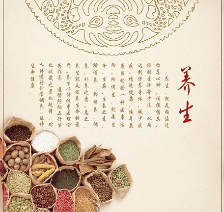

今年体检血脂和胆固醇指标都正常了，轻度的脂肪肝也没有了。这是困扰我几年的事。
按医生的说法血脂是可以通过饮食来调整的，胆固醇必须吃药才能正常。尤其低密度胆固醇对人健康有害，一定要引起重视。
降脂类药物长期服用对肝脏是不好的，会引起转氨酶的升高。所以，我并未遵从医嘱。按照自己的理解调整了生活和饮食，效果还不错。

总结一下主要有三条变化：
1、压力减小，学会放松心情。
2、调整饮食习惯：主要改变是加大果蔬量。保证食物的多样性。
每天早上坚持吃至少5种蔬菜的沙拉，保证有紫色的洋葱和黑木耳，其它选择应季蔬菜。用番茄酱、橄榄油、柠檬汁、少许糖、酱油来拌。 早餐主食以玉米和地瓜为主，牛奶+麦片或豆浆+麦片（大枣，枸杞、黑芝麻、南瓜子）。
尽量少吃油，少炒菜，以炖菜为主。做荤菜时，去掉肥肉，刮去浮油。
每天至少吃两种水果。
每天坚持喝茶。夏天绿茶，春秋天红茶，冬天普洱。
3、坚持锻炼，每周4次，每次走步1个小时。（最近天热，这项坚持的并不好）
评论留言